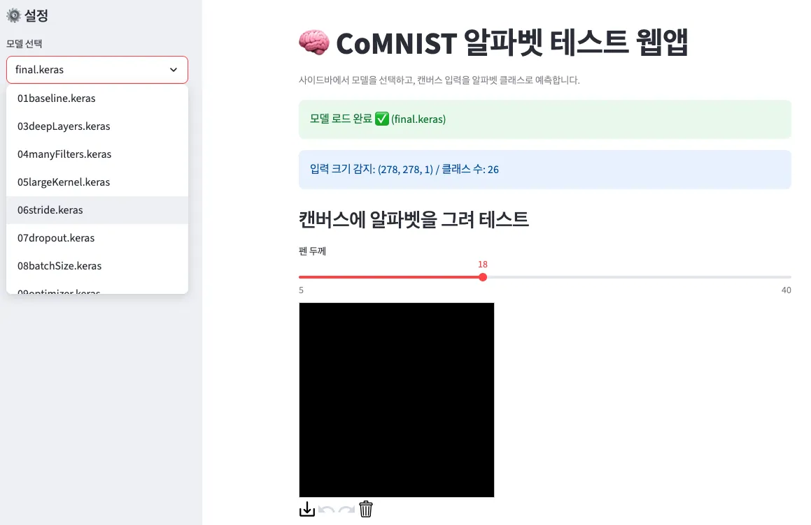

RandomTranslation
글자가 중앙에서 조금 벗어나도 알아보도록 무작위 이동을 5%로 설정합니다.
Part 3 · CoMNIST
Baseline을 그대로 제출하는 데서 멈추지 않고, 알파벳의 모양과 데이터 특성을 근거로 전략을 세워 Final score를 끌어올립니다.
Challenge · S140
학습한 모델을 선택하고 캔버스에 알파벳을 그려, 26개 클래스 중 어떤 글자로 예측하는지 확인합니다.

Submit · S141
Baseline 코드에서 만든 submission.csv를 캐글에 업로드하고, 어떤 전략으로 코드를 작성했는지 설문에 기록합니다.
Teacher’s Strategy · S142–143
슬라이드의 Translation 5%, Rotation 0.05, Block 1~5 전략이 최종 제출 모델의 정본입니다. 알파벳의 의미가 유지되는 범위와 MaxPooling이 실제로 가져갈 값을 함께 고려합니다.
글자가 중앙에서 조금 벗어나도 알아보도록 무작위 이동을 5%로 설정합니다.
기존 전처리는 흰 배경 1.0, 검은 글씨 0.0입니다. MaxPooling이 쓸모없는 큰 배경값을 고르지 않도록 흰 글씨 1.0, 검은 배경 0.0으로 뒤집습니다.
회전을 크게 하면 Z가 N처럼 보일 수 있으므로, 데이터 증강의 Rotation을 0.05로 제한합니다.
Block 1–5 · S142
모든 합성곱 커널은 3×3을 사용하고, Batch Normalization(BN)과 ReLU 뒤에 MaxPooling을 배치합니다. Block 1만 합성곱을 두 번 사용합니다.
3×3 · BN · ReLU
3×3 · BN · ReLU
MaxPooling
3×3 · BN · ReLU
MaxPooling
3×3 · BN · ReLU
MaxPooling
3×3 · BN · ReLU
MaxPooling
3×3 · BN · ReLU
MaxPooling
각 채널의 특징을 하나의 대표값으로 요약합니다.
분류기가 특정 특징에 과하게 의존하지 않도록 일부 연결을 끕니다.
BN → ReLU → Dropout 0.4를 거쳐 26개 알파벳을 분류합니다.
Baseline vs Final · S143
Final 모델은 전체 파라미터 수를 줄이는 대신 더 오래 학습했고, 테스트 정확도와 캐글 점수를 함께 높였습니다.
| 구분 | 전체 파라미터 수 | Early stopping Epoch | 학습 소요시간 | Test_loss | Test_acc | Public score | Final score |
|---|---|---|---|---|---|---|---|
| Baseline | 39,024,410 | 28 | 00:01:43 | 0.7862 | 0.8080 | 0.78153 | 0.80345 |
| Final | 6,854,234 | 86 | 00:44:16 | 0.1158 | 0.9708 | 0.95968 | 0.96826 |
기본 모델로 얻은 캐글 최종 점수입니다.
데이터와 구조 전략을 반영한 최종 점수입니다.
Baseline의 39,024,410개보다 적은 파라미터로 구성했습니다.
Notebook Experiment · Last Cell
아래 마지막 셀은 실험 과정 중 하나로, 최종 제출 모델의 정본인 슬라이드 전략과 설정이 다릅니다. 두 자료를 합치거나 수치를 고치지 않고 노트북 셀을 그대로 옮겼습니다.
Present · S144
점수만 말하지 말고, 무엇을 바꾸었는지와 그 선택의 이유, 실제 결과가 어떻게 달라졌는지를 함께 설명합니다.
Baseline에서 수정한 데이터 증강과 모델 구조를 짚습니다.
알파벳 특성이나 이전 결과를 근거로 선택 이유를 말합니다.
파라미터, 학습 시간, Test_acc, 캐글 점수를 함께 비교합니다.
Quick Check
답을 고르면 바로 해설이 나타납니다.
답을 고르면 바로 해설이 나타납니다.